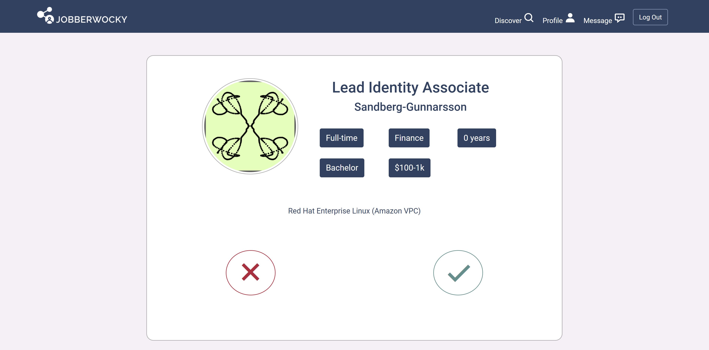
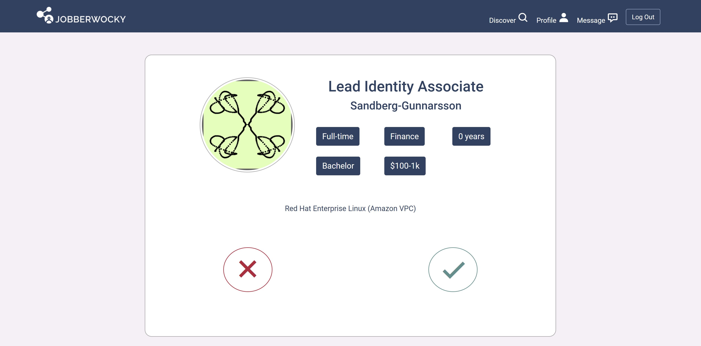

Full-Stack App
 


Jobberwocky
Ruby on Rails, PostgreSQLA job-matching site for companies to get matched with the right candidates and job-seekers with their right companies.
Tired of scrolling through endless job posts to find a suitable job for you? Or are you finding it hard to sift through numerous applications for the right candidiate? Let us do the work for you!
For companies, upload your job posts then head over to the "match" page to explore candidates that meet your requirements. For job-seekers, update your profile then explore job posts that match with your skills.